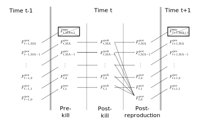
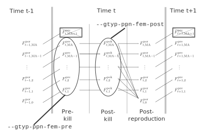

about_spip.RmdThis provides a short description of a few things that one should
know about how spip works.
spip life cycle
spip is a program that records time in discrete periods
that can be thought of as years. When individuals are born at time
they are considered to be of age 0 and they have a birth year of
.
The user must input to the program the maximum possible age of an
individual. Here, we will refer that maximum age as
.
Within each year in spip the following events occur, in
order:
--fem-postrep-die and
--male-postrep-die. With this value set to 1, for example,
semelparity can be enforced.It is worth noting that even though there are some -year-olds around at the beginning of each time period, they all die during the episode of death, and, because they cannot be sampled during the sampling episode before death, it is like they do not exist.
The year in spip can thus be divided into three different periods between the demographic events/episodes:
We will use , , and to denote the number of -year-old females during the prekill, postkill, and post-reproduction periods, respectively, of time . The diagram below, showing these numbers in relation to one another, along with notations of their expected values should help users to understand the spip annual cycle. The numbers of males change across time periods in a similar fashion. 
Annotated in the above are the three distinct periods in spip’s
annual cycle: the prekill, postkill and
post-reproductive periods. When the output of spip is slurped
up by CKMRpop, these numbers become the respective tibbles (elements of
the output list of slurp_spip()) of:
census_prekill, census_postkill, and
census_postrepro, respectively.
The expected numbers of individuals after each transition is as follows:
--fem-surv-probs
option.--fem-prob-repro option)
and
is the probability that an
-year-old
female will die after engaging in reproduction (even if no offspring
were actually produced!), as given in the --fem-postrep-die
option. This is an additional source of death that is useful for
modeling anadromous species whose reproductive journey incurs a
substantial cost.spip annual cycle
The two main sampling schemes available in spip are keyed to these
different time periods within the spip annual cycle as shown by the
following figure:

Thus, --gtyp-ppn-fem-pre and
--gtyp-ppn-male-pre involve sampling from the simulated
population at a different point in the year than do the
--gtyp-ppn-fem-post and --gtyp-ppn-male-post
options.
It is also possible to only sample those individuals that are trying to
reproduce in a certain year using a third sampling scheme requested with
the --gtyp-ppn-fem-dur and --gtyp-ppn-male-dur
options to spip. The probability that an individual would try to
reproduce in a given year is age specific and is set using the
--fem-prob-repro and --male-prob-repro
options.
It is worth noting that the pre, post and
dur, sampling options all occur relatively independently
(so long as sampling is not lethal—see the somewhat experimental
--lethal-sampling option). spip reports the different years
when an individual is sampled during the pre,
post, and dur periods in the year. CKMRpop
preserves those times in separate lists when it slurps up the spip
output. For example slurped$samples has the list columns:
samp_years_list_pre, samp_years_list_post, and
samp_years_list_dur. For all downstream analyses, CKMRpop
uses the list column samp_years_list, which, by default is
the same as the samp_years_list_post. This means, at the
present time, you should use the options to sample individuals after the
episode of death using the the --gtyp-ppn-fem-post and
--gtyp-ppn-male-post options.
Note that, in most cases when exploring CKMR, the user will want to
use the --gtyp-ppn-fem-post and
--gtyp-ppn-male-post options, anyway, because those are
samples from the adult population that are available for
reproduction.
If it is desired to sample all newborns at time
,
then currently the way to do that is to sample 1-year-olds at time
using the --gtyp-ppn-fem-pre and
--gtyp-ppn-male-pre options. However, it would take some
extra finagling to get those sampling years into the
samp_years_list column referenced above for the downstream
analyses.
TODO ITEM: combine sampling at all times into the single
samp_years_list column, perhaps, or make it easier for
users to decide how to combine those different sampling episodes. For
now, though, users should stick to using the
--gtyp-ppn-fem-post and --gtyp-ppn-male-post
options.
spip
spip. Migration in spip is a
“two-stage” phenomenon: in the first stage, individuals leave a
population with sex-, year- and age-specific out-migration rates
specified with the population’s options --fem-prob-mig-out
and --male-prob-mig-out. They leave each population before
the prekill census occurs and also before the prekill sampling occurs.
Diagrammatically, it looks like this:
Schematic describing the first stage of migration: migration out of a population. Each blue line shows individuals leaving the population and entering a pool of migrants.
The expected numbers of individuals in the pool of migrants who have left the population is given by the time- and age-specific rates set by the user. We will denote the outmigration rate for age individuals at time from a given population by . It follows then that, for this given population:
In the following, we will want to refer to these outmigration rates for each population, so we may also adorn the notation, thus:
to refer to rates and sizes specifically for population .
After the outmigration stage, each population has a pool of migrants
that are waiting to migrate into other populations. The rates by which
this happens are specified with the --fem-prob-mig-in and
--male-prob-mig-in options. These options set in-migration
rates for different years and for different ages, effectively setting
the fraction of the total number of out-migrated individuals from
population
of age
at time
,
,
that will migrate into the other populations. Thus, there is one number
to set for each population. For example, if there are
populations, we would have:
The probability of migrating back to
the population from whence one came is always 0. So, even if the user
sets that to some non-zero value, it will be forced to zero and the
values of the remaining in-migration rates will be re-scaled so as to
sum to 1.
Given this set up, the expected number of individuals from the outmigrant pool from population that will arrive in population , of age at time is And, so we can also write that entirely in terms of current population sizes and migration rates:
So, this whole system of specifying migrants is a little more complex than a system whereby the user specifies the fraction of individuals in population that originated from population . But, it does provide a lot more control by the user, as well as realism, in that the number of migrants into a population depends on the size of the donor population.